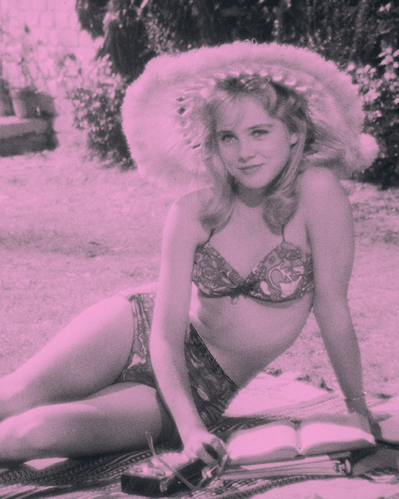
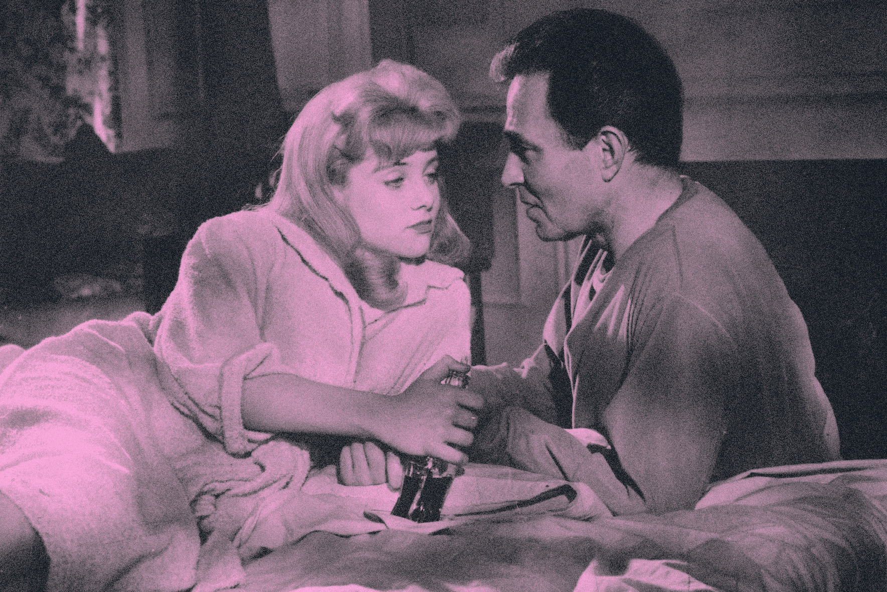
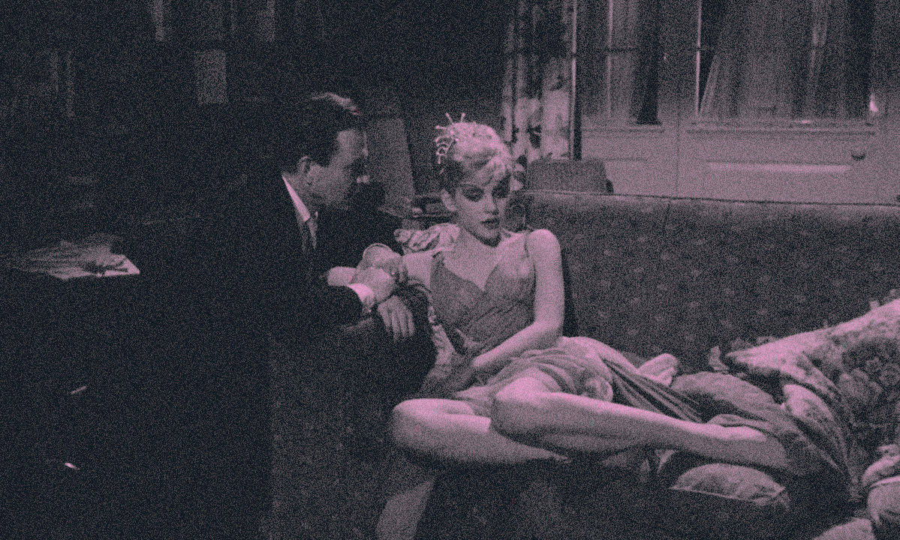
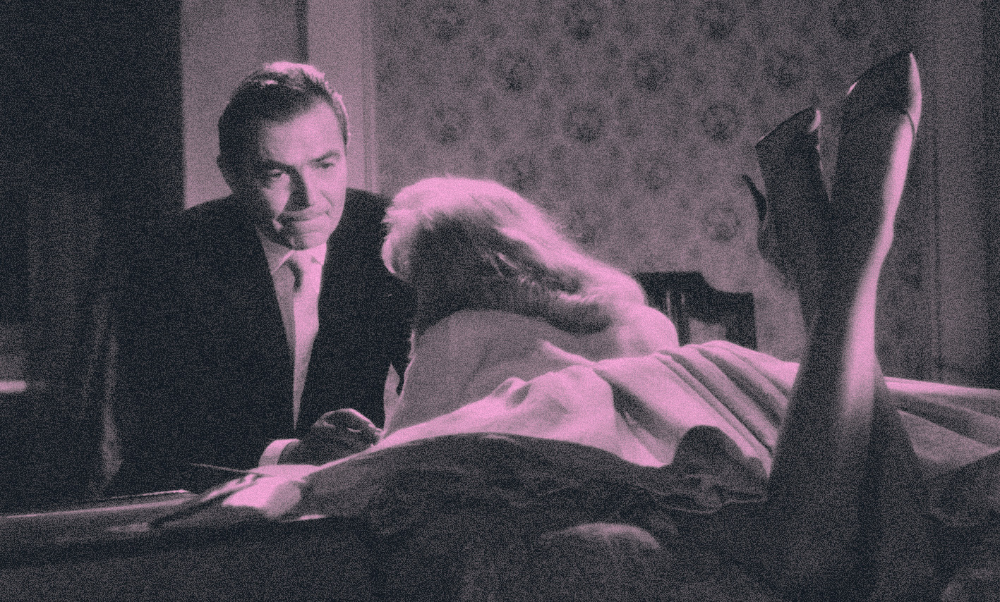
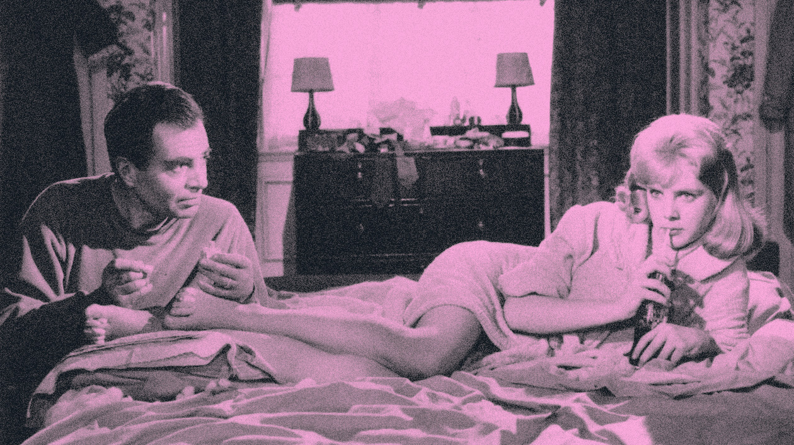

lolita
de KUBRICK stanley (1962).
Récemment arrivé en Nouvelle-Angleterre, le professeur Humbert Humbert cherche une chambre à louer. Visitant un logement, il aperçoit la jeune fille de la maison, Lolita. Cette vision l'enflamme et il décide de s'installer là. Il épouse bientôt madame Haze, propriétaire des lieux et mère de Lolita, pour rester auprès de la jeune fille.


DISTRIBUTION
- MASON James : Humbert Humbert
- WINTERS Shelley : Charlotte Haze
- LYON Sue : Dolores « Lolita » Haze
- SELLERS Peter : Clare Quilty / Dr Zempf
- COCKRELL Gary : Richard T. « Dick » Schiller
- BSTOVIN Jerry : John Farlow
- DECKER Diana : Jean Farlow
- MAXWELL Lois : Nurse Mary Lore
- LINDER Cec : Dr Keegee
- GREENE Bill : George Swine
- DOUGLAS Shirley : Mrs Starch, professeur de piano
- DYRENFORTH James : Frederick Beale Sr.
- STONE Marianne : Vivian Darkbloom
- MATHIE Marion : Miss Lebone
FICHE TECHNIQUE
- Titre original : Lolita
- Réalisation : Stanley Kubrick
- Scénario : Vladimir Nobokov, d’après son roman ‘Lolita’
- Musique : Nelson Riddle et Bob Harris
- Genre : drame
- Durée : 153 minutes

